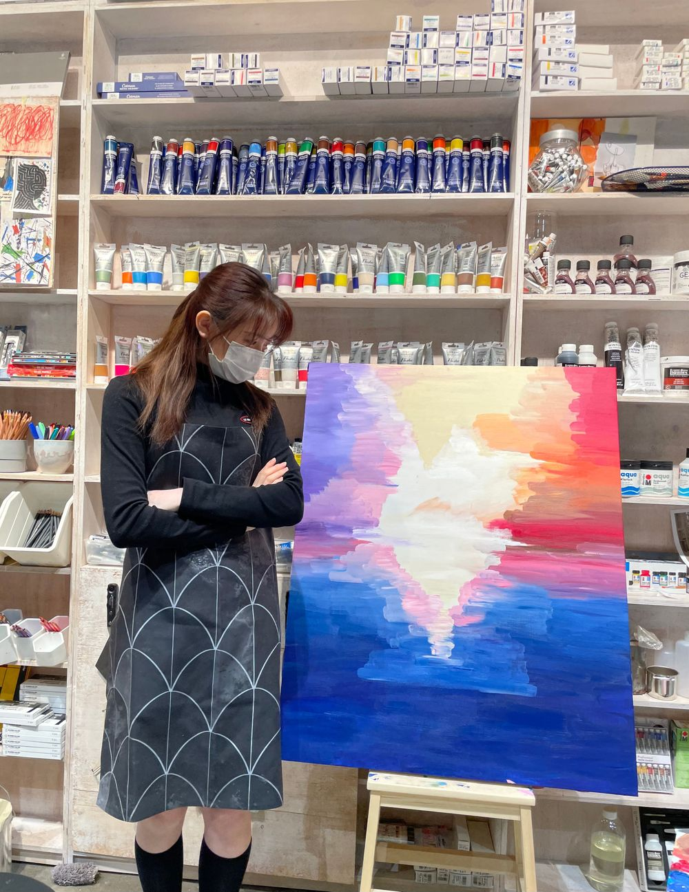
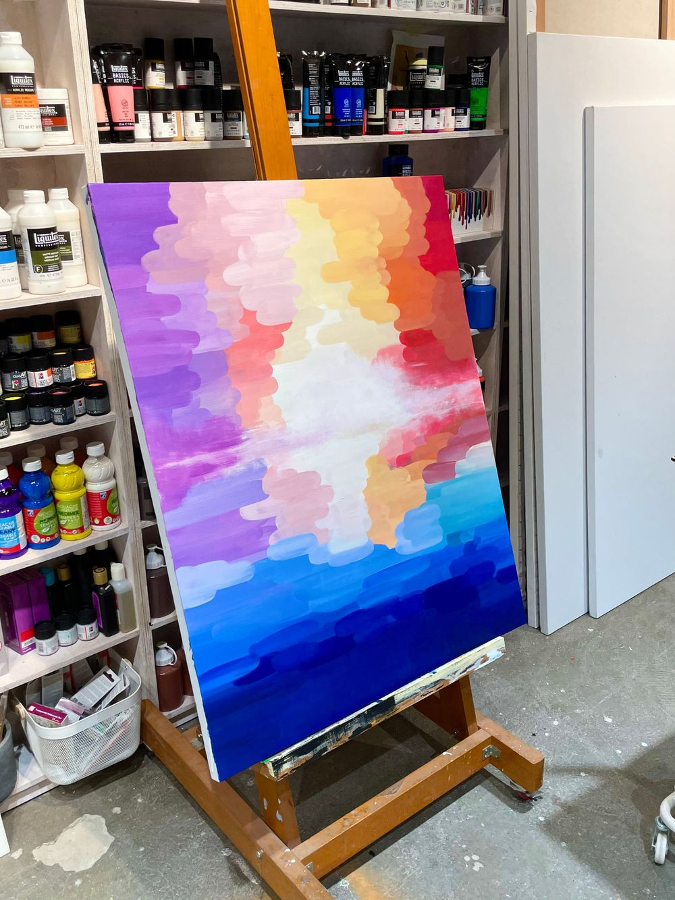

작은 캔버스부터 시작하려고 했는데
의도치 않은 재료소진으로
제 몸만한 캔버스에 그림을 그리게 되었거든요..ㅎㅎ
생각보다 커서
한참동안 하얀 캔버스를 바라봤던 것 같아요:)
사실 처음에는 붓터치도 너무 어색하구
색연결이 ㅋㅋㅋㅋ 자연스럽게 안되니까
생각했던 그림과 다르게 나왔다고 느꼈어요
요렇게요👇🏻👇🏻

2월 달에 처음 가구 이번에 3월이 되어서 갔는데
저 한 달 전 그림을 보고
캬...어디서 부터 손대야하낰ㅋㅋㅋㅋㅋㅋㅋ
또 고민했던 것 같아요
하지만 붓을 드는 순간 저는 과감없이 덧칠을 했구
새로운 그림이 또 나왔어요 ㅋㅋㅋㅋㅋㅋㅋㅋㅋㅋㅋㅋㅋ
빨리 완성 될 줄 알았던 그림은 3시간 반이나 걸렸네요

둥글둥글한 붓터치로 변경
그리고 중간에 수평선은 스펀지로 표현했습니다.
(갑자기 떠올라서 스펀지를 찾아 집어들었음)
그림과 나랑 같이 찍은 사진은ㅎㅎ 앞으로
작품 더 생기고 차근차근 올려야겠당🙉 룰루
행복하담
*그림을 뒤집어보아도 재밌어요